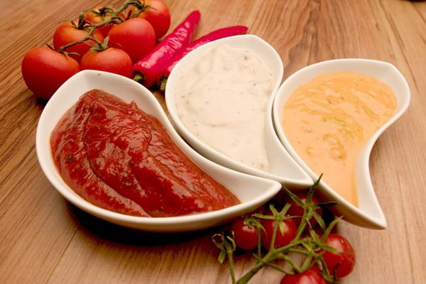

Соус «Ворчестерский»200 мл винного уксуса
1,5 л воды
100 г репчатого лука
2 зубчика чеснока
50 г мякоти тамаринда
50 мл сои
50 г патоки
10 г корня имбиря
15 г зерен горчицы
5 г черного перца горошком
5 г анчоусов
2 г молотой корицы
2 г молотой гвоздики
2 г семян кинзы
2 г карри
2 г красного молотого перца
10 г соли
1. Лук очистить, нашинковать и соединить с растолченным чесноком. Добавить измельченную мякоть тамаринда, патоку, винный уксус, сою, растертый анчоус и измельченный корень имбиря.
2. Всыпать зерна горчицы, семена кинзы, черный перец горошком, корицу, гвоздику, красный перец, карри и соль.
3. Все тщательно перемешать, переложить в муслиновый пакет, опустить в посуду с доведенной до кипения водой и держать на слабом огне в течение 40 минут, после чего снять с плиты и дать остыть при комнатной температуре.
4. Готовый соус разлить по бутылям, плотно укупорить и оставить в темном и прохладном месте на 2 суток, время от времени встряхивая.
Соус уксусный с кореньями200 мл 3 %-ного уксуса
20 г сахара
5 г корня сельдерея
5 г корня имбиря
5 г зелени петрушки
5 звездочек гвоздики
2 г молотого мускатного ореха
2 г белого молотого перца
1 лавровый лист
2 г соли
1. Сахар растопить в сотейнике до образования жидкой карамельной массы, после чего ввести уксус.
2. Через 2–3 минуты, непрерывном помешивая, всыпать соль, белый перец, тертые корни имбиря и сельдерея, добавить нашинкованную зелень петрушки и растертые в порошок звездочки гвоздики и лавровый лист.
3. Все хорошо растереть и держать на слабом огне в течение 15–20 минут, после чего снять с плиты и дать остыть.
4. Готовый соус подать на стол к мясу или рыбе.
Соус молочный с кукурузной мукой и желтками500 мл молока
3 яичных желтка
20 г кукурузной муки
2 мл ванильной эссенции
5 г сахара
1. В молоко ввести предварительно растертые венчиком яичные желтки, добавить муку, а также сахар и ванильную эссенцию.
2. Все тщательно перемешать и прогревать на слабом огне в течение 15–20 минут, после чего снять с плиты и дать остыть при комнатной температуре.
3. Готовый соус подать на стол к основному блюду.
Соус молочный со сливками500 мл молока
100 мл сливок
300 г панировочных сухарей
100 г репчатого лука
10 звездочек гвоздики
2 г черного молотого перца
2 г соли
1. Луковицу очистить, нашпиговать звездочками гвоздики, опустить в кипящее молоко и держать на слабом огне в течение 2–3 минут, после чего вынуть его с помощью шумовки.
2. Тонкой струйкой, непрерывно помешивая, всыпать панировочные сухари.
3. Еще через 2–3 минуты кипения добавить соль и черный перец, снять с плиты, дать остыть при комнатной температуре, влить сливки и хорошо все перемешать.
4. Готовый соус подать на стол к блюдам из птицы.
Соус сливочный с уксусом и горчицей200 мл сливок
100 мл белого винного уксуса
2 яйца
10 г пшеничной муки
10 г горчичного порошка
10 г сахара
2 г соли
1. Муку смешать с горчичным порошком, солью и сахаром. Затем, взбивая венчиком, ввести яйца и влить уксус.
2. Все тщательно перемешать, поместить на водяную баню и кипятить на слабом огне, постоянно помешивая, в течение 2–3 минут (до некоторого загустения).
3. Полученную массу снять с плиты, дать остыть при комнатной температуре и ввести сливки.
4. Готовый соус подать на стол к основному блюду. Хранить его можно в холодильнике в закрытой стеклянной посуде не более 2 недель.
Соус сливочный с хреном и яблочным уксусом200 мл сливок
50 г корня хрена
50 г панировочных сухарей или хлебных крошек
20 г сахарной пудры
10 мл яблочного уксуса
2 г соли
1. Сливки соединить с тертым корнем хрена, сахарной пудрой и панировочными сухарями.
2. Все тщательно растереть, после чего влить яблочный уксус, всыпать соль, сахарную пудру и хорошо перемешать.
3. Готовый соус подать на стол к вареной или жареной говядине.
Соус кефирный со сливками и луком200 мл кефира
100 мл сливок
50 г сливочного масла
50 г пшеничного хлеба
50 г репчатого лука
2 г соли
1. Хлебный мякиш раскрошить, залить кефиром, добавить растопленное сливочное масло, разрезанную на четыре части луковицу и соль.
2. Тщательно все перемешать и держать на небольшом огне в течение 7–10 минут.
3. Снять с плиты, вынуть с помощью шумовки лук, небольшими порциями, постоянно помешивая, влить сливки и взбить венчиком.
4. Готовый соус подать на стол к основному блюду.
Соус масляно-мучной150 г сливочного масла
150 мл воды
30 г пшеничной муки
10 мл лимонного сока
2 г соли
1. Муку просеять, высыпать на сковороду или в сотейник с растопленным сливочным маслом (40 г) и держать на слабом огне, непрерывно помешивая в течение 3–5 минут.
2. Снять с плиты и, не останавливаясь, влить воду, предварительно растворив в ней соль.
3. Полученную массу прогревать еще 1–2 минуты, после чего добавить оставшееся сливочное масло, свежеотжатый лимонный сок и тщательно перемешать.
4. Готовый соус подать на стол к рыбе, приготовленной на пару.
Соус масляный с каперсами100 г сливочного масла
100 мл воды
20 г консервированных каперсов
20 г пшеничной муки
2 г соли
1. Муку просеять и спассеровать в 50 г растопленного сливочного масла.
2. Влить кипяченую воду, добавить растопленное оставшееся масло и каперсы, всыпать соль, тщательно перемешать и прогревать на слабом огне в течение 3–5 минут.
3. Снять с плиты, растереть с помощью блендера до образования однородной массы и дать немного остыть.
4. Готовый соус сразу подать на стол к вареной рыбе или баранине.
Соус масляный с зеленью петрушки200 г сливочного масла
200 мл воды
30 г зелени петрушки
30 г пшеничной муки
2 г соли
1. Муку просеять и спассеровать, постоянно помешивая, в небольшом количестве сливочного масла.
2. Влить воду, добавить оставшееся масло и нашинкованную зелень петрушки, всыпать соль и держать на слабом огне еще 3–5 минут.
3. Полученную массу снять с плиты и дать немного остыть.
4. Готовый соус подать на стол к телятине или рыбе.
Соус мятный с винным уксусом200 г листьев мяты
100 мл белого винного уксуса
50 мл воды
20 г сахара
1. Листья мяты промыть, обсушить на салфетке или полотенце, нашинковать, залить горячей водой, предварительно растворив в ней сахар, и добавить винный уксус.
2. Все тщательно перемешать, накрыть крышкой и оставить в прохладном месте на 2–3 часа.
3. Готовый соус подать на стол к основному блюду.
Соус на мясном бульоне500 мл говяжьего бульона
20 мл 3 %-ного уксуса
5 г сахара
1. Говяжий бульон довести до кипения на небольшом огне, после чего всыпать сахар, влить столовый уксус, хорошо перемешать и прогревать еще 3–5 минут.
2. Снять с плиты и дать остыть при комнатной температуре. Готовый соус подать на стол к жареному мясу.
Соус с хреном и петрушкой500 мл куриного бульона
20 г сливочного масла
10 г пшеничной муки
50 г репчатого лука
30 г корня хрена
5 г корня петрушки
3 горошины черного перца
2 г соли
1. В куриный бульон положить натертый корень петрушки, нарубленный лук и черный перец горошком, прокипятить на среднем огне и процедить через сито.
2. Сливочное масло растопить в сотейнике или сковороде, после чего всыпать просеянную муку и обжарить ее, непрерывно помешивая и не допуская образования комков.
3. После этого, не останавливаясь, тонкой струйкой влить бульон и потомить еще 3–5 минут.
4. Посолить, добавить измельченный корень хрена, довести до кипения, снять с плиты и дать остыть при комнатной температуре. Готовый соус подать на стол к основному блюду.
Соус луковый с шалфеем200 г репчатого лука
100 мл молока
200 г панировочных сухарей
50 мл концентрированного говяжьего бульона
10 г зелени шалфея
2 г черного молотого перца
2 г соли
1. Лук, не очищая, положить на противень и запекать в духовке при температуре 180 °C в течение 40 минут (до размягчения), после чего измельчить.
2. Полученную массу соединить с панировочными сухарями, предварительно залив их на 10 минут молоком, всыпать нашинкованную зелень шалфея, черный перец и соль. Все тщательно перемешать и разбавить подогретым говяжьим бульоном.
3. Готовый соус подать на стол к запеченной утке.
Соус грибной500 мл куриного бульона
100 г грибов
30 г сливочного масла
10 мл белого вина
10 г томатной пасты
10 мл лимонного сока
10 г пшеничной муки
50 г репчатого лука
10 г корня петрушки
5 горошин черного перца
4 г соли
1. В куриный бульон положить нашинкованный лук, измельченный корень петрушки и горошины черного перца, всыпать соль и кипятить в течение 7–10 минут, после чего процедить через сито.
2. Муку просеять и слегка обжарить на сковороде или в сотейнике с растопленным сливочным маслом (20 г).
3. Полученную массу, постоянно помешивая, развести бульоном.
4. Добавить грибы, растертые с помощью блендера с оставшимся сливочным маслом, томатной пастой и свежеотжатым лимонным соком.
5. Все тщательно перемешать, влить вино, довести до кипения и держать на слабом огне в течение 10 минут, после чего снять с плиты и дать остыть при комнатной температуре. Готовый соус подать на стол к основному блюду.
Соус винный с корнишонами, трюфелями и языком500 мл белого вина
100 г лука-шалота
100 г корнишонов
20 г белых грибов
20 г трюфелей
20 г вареного говяжьего языка
2 сваренных вкрутую яйца
200 мл соуса «Демиглас»
2 г кайенского молотого перца
2 г соли
1. Лук-шалот нашинковать, переложить в сотейник, залить вином и держать на слабом огне 3–5 минут.
2. Ввести мелко нарезанные грибы и трюфели, нарубленные корнишоны, яйца и вареный язык, влить соус «Демиглас», всыпать соль и кайенский перец.
3. Все держать на среднем огне еще 5–7 минут, не допуская кипения, а затем снять с плиты и дать немного остыть при комнатной температуре.
4. Готовый соус подать на стол к котлетам.
Соус яблочный500 мл воды
200 г сушеных яблок
30 г пшеничной муки
2 г молотой корицы
1. Яблоки перебрать, хорошо промыть и откинуть на дуршлаг, а затем положить в кипящую воду и варить на слабом огне в течение 15–20 минут, после чего процедить.
2. Муку просеять, спассеровать на сухой сковороде, переложить в полученный компот, всыпать корицу, хорошо все перемешать и кипятить 2–3 минуты. Затем снять с плиты и дать немного остыть.
3. Готовый соус подать на стол к жареному мясу, свинине или блюдам из птицы.
Соус «Камберленд»500 г ягод красной смородины
150 г желе из ягод красной смородины
100 г сахара
20 мл воды
10 мл красного вина
20 мл лимонного сока
20 мл апельсинового сока
10 г цедры лимона
10 г цедры апельсина
5 г столовой горчицы
2 г корня имбиря
1. Ягоды красной смородины перебрать, хорошо и откинуть на дуршлаг, после чего протереть сквозь сито.
2. В полученную массу всыпать сахар, влить вино, свежеотжатые лимонный и апельсиновый соки, а также предварительно прокипяченную и охлажденную воду.
3. Хорошо все перемешать, добавить смородиновое желе, горчицу, измельченный корень имбиря, тертую цедру лимона и апельсина, после чего потомить на слабом огне в течение 10–15 минут, не доводя до сильного кипения, а затем снять с плиты и дать остыть.
4. Готовый соус подать на стол к вареной говядине, утке или свиному окороку.
Соус «Йоркширский»500 мл красного вина (портвейна)
50 г смородинового желе
20 мл апельсинового сока
10 г цедры апельсина
2 г молотой корицы
2 г красного молотого перца
1. Вино довести до кипения, добавить измельченную на мелкой терке апельсиновую цедру и держать на слабом огне еще 2–3 минуты. Снять с плиты, процедить, ввести ягодное желе и свежеотжатый апельсиновый сок.
2. Всыпать красный перец и корицу, тщательно перемешать и кипятить 2–3 минуты, потом еще раз процедить и дать немного остыть. Готовый соус подать на стол к тушеному окороку или запеченной утке.
Соус сладкий молочный с ванилью300 мл молока
4 яичных желтка
100 г сахара
1 палочка ванили
1. Молоко поместить на плиту и довести до кипения.
2. Положить палочку ванили и держать на слабом огне в течение 2–3 минут.
3. После этого палочку ванили удалить, ввести взбитые яичные желтки, растертые с сахаром, и кипятить еще 2 минуты, непрерывно помешивая, затем снять с плиты, дать остыть при комнатной температуре и процедить.
4. Готовый соус подать на стол к десерту.
Соус сладкий сливочно-молочный с фисташковой пастой200 мл сливок
200 мл молока
100 г сахара
5 яичных желтков
50 г фисташковой пасты
1. Яичные желтки хорошо растереть с сахаром.
2. Полученную массу небольшими порциями ввести в кипящую смесь молока и сливок. Затем положить фисташковую пасту. Полученную массу тщательно перемешать и держать на слабом огне, не доводя до кипения, еще 2–3 минуты.
3. Готовый соус подать на стол к десерту.
Соус сладкий клюквенный300 г ягод клюквы
700 мл воды
20 г сахарной пудры
1. Ягоды клюквы промыть, перебрать, переложить в сотейник, залить водой и держать на слабом огне до размягчения. Полученную массу протереть сквозь сито, всыпать сахарную пудру, тщательно все перемешать и кипятить в течение 2–3 минут, затем снять с плиты и дать остыть.
2. Готовый соус подать на стол к блюдам из птицы, свинины или говядины.